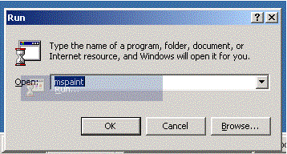

FadeRect Source Code (30K)
FadeRect Source Code (30K)
 3 Feb 2003
3 Feb 2003
First Posted
 Subclassing Without The Crashes
Subclassing Without The Crashes

Fading Out Selected Areas Using UpdatedLayeredWindow
Create the Windows 2000/XP Start Menu fade-out effect in your application

In Windows 2000 and XP, when you click a Start Menu item, such as "Run" an after image of the item you've clicked remains on screen and fades out whilst the Run box starts up. This article provides a reusable form-class you can use to provide this effect in your application.
About The Download
The download provides a reusable form, fFadeRect, which allows you to add fade-out effects to any application. This form has one important method, FadeRect, which takes the following parameters:
- lLeft, lTop, lWidth, lHeight - The position relative to the screen to display the fade out effect.
- lSrcLeft, lSrcTop - The position to source the fade out image from. You can either specify a Device Context using the optional lhDCSrc parameter, in which case these parameters are relative to that Device Context, or leave the source Device Context blank, in which case the desktop device context is used and the position is relative to the top-left of the screen.
By default, calling FadeRect will check if the system specifies that menu fades should be done, and will simply exit if not. You can force a fade to occur by setting the ForceFade property. Finally, you can specify how long the fade should take by setting the FadeStepSize property. This accepts values between 1 and 255 and specifies how much alpha to subtract each time the timer fires. A setting of 1 will make the fade very sloooow, whereas a setting of 128 or above will result in virtually no fade at all. The default setting is 15.
Fade Effects
Start-Run Menu Fading out
There are two ways you can go about performing a fade effect on the desktop. Both techniques use the new Layered Windows APIs built into Windows 2000 and XP. The first method is to use drawing indirection using the SetLayeredWindowsAttributes API call. This is described further in Window Shapes Using Layering. The second technique is to use the more powerful UpdateLayeredWindow call, which is used for this code. Using UpdateLayeredWindow gives you complete control of per-pixel alpha drawn to the screen since all drawing is done to an offscreen DC before being supplied to Windows to draw using the API. This additional power is also makes the API a bit more difficult to use, since you need to be able to draw everything onto the DC.
Selection Fading in 2000 and XP
With some difficulty, you can discover that fades on menu items are accomplished using a different window to the actual menu itself, with a class name "SysFader". This window is used to display fade-ins of menus and fade-outs of selected items, and is transparent to the mouse. To create a similar window, the following extended styles need to be set:
- WS_EX_LAYERED - Tells Windows to combine this window with other windows beneath it using the specified alpha functions.
- WS_EX_TRANSPARENT - Makes the Window transparent to the mouse.
- WS_EX_TOOLWINDOW - Ensure it doesn't appear in the taskbar.
- WS_EX_TOPMOST - Display window on top.
Once a window with these styles has been created, the contents can be set using the UpdateLayeredWindow API. This API works in a similar way to AlphaBlend (see Alpha DIBSections for more details) but additionally specifies the size of the layered window. UpdateLayeredWindow is declared as follows:
Private Type BLENDFUNCTION
BlendOp As Byte
BlendFlags As Byte
SourceConstantAlpha As Byte
AlphaFormat As Byte
End Type
' AlphaFormat flags:
Private Const AC_SRC_OVER As Long = &H0&
Private Const AC_SRC_ALPHA = &H1
Private Declare Function UpdateLayeredWindow Lib "user32" ( _
ByVal hwnd As Long, _ ' layered window handle
ByVal hdcDst As Long, _ ' destination device context; typically zero
pptDst As Any, _ ' start POINT on destination, default to (0,0)
psize As Any, _ ' SIZE to draw: use last psize if not set.
ByVal hdcSrc As Long, _ ' source device context
pptSrc As Any, _ ' start POINT on source, defaults to (0,0)
ByVal crKey As Long, _ ' Transparent Color when ULW_COLORKEY flag set
pblend As BLENDFUNCTION, _ ' Alpha blending function
ByVal dwFlags As Long _ ' Flags specifying operation
) As Long
' UpdateLayeredWindow flags:
Private Const ULW_COLORKEY As Long = &H1&
Private Const ULW_ALPHA As Long = &H2&
Private Const ULW_OPAQUE As Long = &H4&
To perform a fade of a selection, the code then runs through these steps:
- Loads the fade form.
- Sets the extended styles for transparency and layering
- Moves the form to the correct position
- Makes the form topmost and visible (initially it will be completely transparent).
- Calls UpdateLayeredWindow to transfer the desktop's contents at the point into the Window, with an initial alpha amout of 255 (i.e. opaque).
- Initiates a timer. Each time the timer fires, an amount is subtracted from the alpha and UpdateLayeredWindow is called again with the new alpha.
- When the alpha reaches zero the timer is stopped and the form unloaded.
Only If You Want It
Whether menu items fade out on clicking is one of the Advanced -> Performance options which can be set in the System Properties. This value is accessible using the SystemParametersInfo call, as follows:
Private Declare Function SystemParametersInfo Lib "user32" _
Alias "SystemParametersInfoA" ( _
ByVal uAction As Long, ByVal uParam As Long, _
ByRef lpvParam As Any, ByVal fuWinIni As Long) As Long
Private Const SPI_GETSELECTIONFADE As Long = &H1014&
..
Public Property Get FadeEffectsSelected() As Boolean
Dim lFade As Long
SystemParametersInfo SPI_GETSELECTIONFADE, 0, lFade, 0
FadeEffectsSelected = Not (lFade = 0)
End Property
Of course, you're free to ignore this setting if you want to.
Conclusion
fFadeRect provides a simple way to add selection fade outs to a VB application. The technique should be easy to migrate to .NET as well.